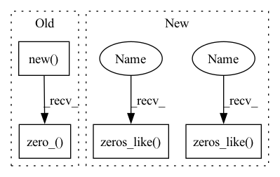

Pattern ID :28744

Before Change
grad_input = input.new(*input.size()).zero_()
grad_offset = offset.new(*offset.size()).zero_()
grad_mask = mask.new(*mask.size()).zero_()
grad_weight = weight.new(*weight.size()).zero_()
grad_bias = bias.new(*bias.size()).zero_()
_backend.modulated_deform_conv_cuda_backward(
input, weight, bias, self._bufs[0], offset, mask, self._bufs[1],
grad_input, grad_weight, grad_bias, grad_offset, grad_mask,
After Change
if not grad_output.is_cuda:
raise NotImplementedError
input, offset, mask, weight, bias = ctx.saved_tensors
grad_input = torch.zeros_like(input)
grad_offset = torch.zeros_like(offset)
grad_mask = torch.zeros_like(mask)
grad_weight = torch.zeros_like(weight)
grad_bias = torch.zeros_like(bias)
_backend.modulated_deform_conv_cuda_backward(
input, weight, bias, ctx._bufs[0], offset, mask, ctx._bufs[1],
grad_input, grad_weight, grad_bias, grad_offset, grad_mask,
In pattern: SUPERPATTERN
Frequency: 4
Non-data size: 4
Instances
Fragment ID: 84647691
Project Name: wxinlong/solo
Commit Name: 6bd60eac3262bc36569a6cf5e67f2e2f70dd9704
Time: 2019-01-15
Author: yhcao6@gmail.com
File Name: mmdet/ops/dcn/functions/modulated_dcn_func.py
M Class Name: ModulatedDeformConvFunction
N Class Name: ModulatedDeformConvFunction
M Method Name: backward(2)
N Method Name: backward(2)
M Parent Class: Function
N Parent Class: Function
M File Name: mmdet/ops/dcn/functions/modulated_dcn_func.py
N File Name: mmdet/ops/dcn/functions/modulated_dcn_func.py
M Start Line: 40
M End Line: 44
N Start Line: 56
N End Line: 69
'>
Before Change
if not grad_output.is_cuda:
raise NotImplementedError
input, offset, mask, weight, bias = self.saved_tensors
grad_input = input.new(*input.size()).zero_()
grad_offset = offset.new(*offset.size()).zero_()
grad_mask = mask.new(*mask.size()).zero_()
grad_weight = weight.new(*weight.size()).zero_()
grad_bias = bias.new(*bias.size()).zero_()
After Change
if not grad_output.is_cuda:
raise NotImplementedError
input, offset, mask, weight, bias = ctx.saved_tensors
grad_input = torch.zeros_like(input)
grad_offset = torch.zeros_like(offset)
grad_mask = torch.zeros_like(mask)
grad_weight = torch.zeros_like(weight)
grad_bias = torch.zeros_like(bias)
_backend.modulated_deform_conv_cuda_backward(
'>
Fragment ID: 84647690
Project Name: wxinlong/solo
Commit Name: 6bd60eac3262bc36569a6cf5e67f2e2f70dd9704
Time: 2019-01-15
Author: yhcao6@gmail.com
File Name: mmdet/ops/dcn/functions/modulated_dcn_func.py
M Class Name: ModulatedDeformConvFunction
N Class Name: ModulatedDeformConvFunction
M Method Name: backward(2)
N Method Name: backward(2)
M Parent Class: Function
N Parent Class: Function
M File Name: mmdet/ops/dcn/functions/modulated_dcn_func.py
N File Name: mmdet/ops/dcn/functions/modulated_dcn_func.py
M Start Line: 40
M End Line: 44
N Start Line: 56
N End Line: 69
'>
Before Change
if len(state) == 0:
state["step"] = 0
state["m_schedule"] = 1.
state["exp_avg"] = grad.new().resize_as_(grad).zero_()
state["exp_avg_sq"] = grad.new().resize_as_(grad).zero_()
// Warming momentum schedule
m_schedule = state["m_schedule"]
After Change
if len(state) == 0:
state["step"] = 0
state["m_schedule"] = 1.
state["exp_avg"] = torch.zeros_like(p.data)
state["exp_avg_sq"] = torch.zeros_like(p.data)
// Warming momentum schedule
m_schedule = state["m_schedule"]
schedule_decay = group["schedule_decay"]
'>
Fragment ID: 84647722
Project Name: feng-lab/pytorch-image-models
Commit Name: ac469b50da310546d1148ad8038aca92c1488a92
Time: 2021-08-17
Author: rwightman@gmail.com
File Name: timm/optim/nadam.py
M Class Name: Nadam
N Class Name: Nadam
M Method Name: step(2)
N Method Name: step(2)
M Parent Class: Optimizer
N Parent Class: Optimizer
M File Name: timm/optim/nadam.py
N File Name: timm/optim/nadam.py
M Start Line: 45
M End Line: 86
N Start Line: 48
N End Line: 59
'>
Before Change
rois = self.rois
offset = self.offset
output_count = self.output_count
grad_input = data.new(*data.size()).zero_()
grad_offset = offset.new(*offset.size()).zero_()
_backend.deform_psroi_pooling_cuda_backward(
grad_output, data, rois, offset, output_count, grad_input,
After Change
rois = ctx.rois
offset = ctx.offset
output_count = ctx.output_count
grad_input = torch.zeros_like(data)
grad_offset = torch.zeros_like(offset)
_backend.deform_psroi_pooling_cuda_backward(
grad_output, data, rois, offset, output_count, grad_input,
grad_offset, ctx.no_trans, ctx.spatial_scale, ctx.output_dim,
'>
Fragment ID: 84647705
Project Name: wxinlong/solo
Commit Name: 6bd60eac3262bc36569a6cf5e67f2e2f70dd9704
Time: 2019-01-15
Author: yhcao6@gmail.com
File Name: mmdet/ops/dcn/functions/modulated_dcn_func.py
M Class Name: DeformRoIPoolingFunction
N Class Name: DeformRoIPoolingFunction
M Method Name: backward(2)
N Method Name: backward(2)
M Parent Class: Function
N Parent Class: Function
M File Name: mmdet/ops/dcn/functions/modulated_dcn_func.py
N File Name: mmdet/ops/dcn/functions/modulated_dcn_func.py
M Start Line: 115
M End Line: 127
N Start Line: 136
N End Line: 149
'>
Before Change
if self.needs_input_grad[0] or self.needs_input_grad[1]:
grad_input = input.new(*input.size()).zero_()
grad_offset = offset.new(*offset.size()).zero_()
deform_conv.deform_conv_backward_input_cuda(
input, offset, grad_output, grad_input,
grad_offset, weight, self.bufs_[0], weight.size(3),
weight.size(2), self.stride[1], self.stride[0],
After Change
cur_im2col_step) == 0, "im2col step must divide batchsize"
if ctx.needs_input_grad[0] or ctx.needs_input_grad[1]:
grad_input = torch.zeros_like(input)
grad_offset = torch.zeros_like(offset)
deform_conv_cuda.deform_conv_backward_input_cuda(
input, offset, grad_output, grad_input,
grad_offset, weight, ctx.bufs_[0], weight.size(3),
weight.size(2), ctx.stride[1], ctx.stride[0],
ctx.padding[1], ctx.padding[0], ctx.dilation[1],
ctx.dilation[0], ctx.deformable_groups, cur_im2col_step)
if ctx.needs_input_grad[2]:
grad_weight = torch.zeros_like(weight)
deform_conv_cuda.deform_conv_backward_parameters_cuda(
input, offset, grad_output,
grad_weight, ctx.bufs_[0], ctx.bufs_[1], weight.size(3),
weight.size(2), ctx.stride[1], ctx.stride[0],
'>
Fragment ID: 84647683
Project Name: wxinlong/solo
Commit Name: 6bd60eac3262bc36569a6cf5e67f2e2f70dd9704
Time: 2019-01-15
Author: yhcao6@gmail.com
File Name: mmdet/ops/dcn/functions/deform_conv.py
M Class Name: DeformConvFunction
N Class Name: DeformConvFunction
M Method Name: backward(2)
N Method Name: backward(2)
M Parent Class: Function
N Parent Class: Function
M File Name: mmdet/ops/dcn/functions/deform_conv.py
N File Name: mmdet/ops/dcn/functions/deform_conv.py
M Start Line: 72
M End Line: 108
N Start Line: 61
N End Line: 96